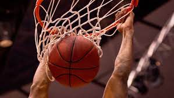
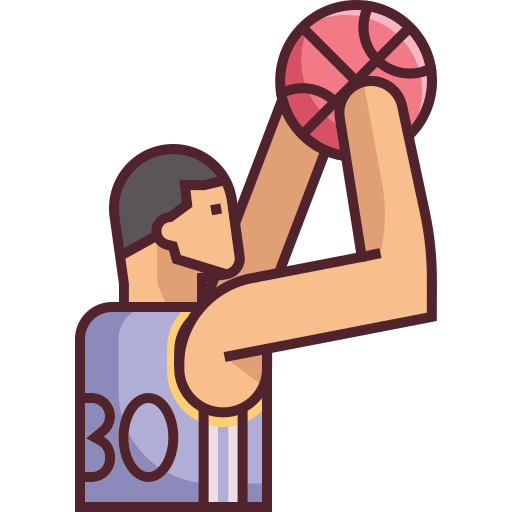

Yo hablaré acerca del basketball con un enfoque económico.
Desarrollo
En mis clases de business aprendí que las inversiones son muy importantes, pero sobre todo
que puedes invertir en muchas cosas, entre ellas en un equipo deportivo. Pero, ¿valdrá la
pena?
Hace poco tiempo realizé una investigación para conocer un poco de la economía dentro del
basketball y las cifras son impactantes. Por lo que parecería razonable invertir en éste
deporte. Pero para hacer esto, son necesarios algunos requisitos...
Motivación
Me motivó mi interés en las inversiones en algo que me gusta, osea el basketball.
wallpaper basketball.
Ranking
27/01/2022
Top 10 equipos de basketball
Se realizará un top de los 10 mejores equipos de basketball.
Golden State Warriors
Phoenix Suns
Utah Jazz
Miami Heat
Memphis Grizzlies
Cleveland Cavaliers
Milwaukee Bucks
Boston Celtics
Brooklyn Nets
Dallas Mavericks

wallpaper basketball.
Sitios oficiales
27/01/2022
5 sitios oficiales de equipos de basketball
Se realizará un listado con links a páginas oficiales de equipos de basketball.
El video me gustó y dice muy bien lo que es el basketball.
Investigación
23/01/2022
Basketaball y su economía
La NBA se plantea extender su política de inversiones. Después de años
participando en rondas de financiación de startups deportivas, la competición
estudia crear un vehículo para invertir en sus propias franquicias. El proyecto
no pretende adquirir participaciones mayoritarias en ninguna de ellas, pero sí
paquetes minoritarios en caso de que sea necesario. El comisionado, Adam
Silver, ha remitido una carta a todos los equipos en los que explica que “este
vehículo proporciona liquidez adicional para la venta de acciones de la
propiedad del equipo, incluyendo la opción de proporcionar acceso a nuevos
grupos de inversores a largo plazo que actualmente no tienen acceso a
oportunidades de propiedad”, según Bloomberg. El tema se discutirá con más
profundidad en la reunión de propietarios que se ha convocado para el 20 de
septiembre en Nueva York, la primera desde que el cofundador de Alibaba
Joseph Tsai alcanzó el 100% de los Brooklyn Nets. Esa operación marcó un
nuevo hito dentro de la liga estadounidense de baloncesto, al cifrarse en 3.500
millones de dólares (3.155 millones de euros). Con este movimiento, la NBA
podría solucionar los problemas que muchos de los actuales dueños de
franquicias tienen para poder colocar pequeños paquetes accionariales. ¿La
razón? La escalada de las valoraciones de los equipos y el poco interés que
muestran los inversores si no se les ofrece poder participar en la gestión o, al
menos, sentarse en el consejo de administración.
1
Conviene invertir en el basketball?
El 14 de septiembre de 2014 asistí a una de las conferencias de prensa más
extrañas en poco más de una década como reportero. Aquellos que estaban en
el podio, anunciaron que Sergio Valdeolmillos dejaba de ser el técnico de la
selección nacional de basquetbol argumentando la falta de un reporte del
Mundial de España 2014. Valdeolmillos se volvió incómodo para Ademeba,
Conade y COM en esos días por asegurar que no quería un doble contrato con
Halcones
y la selección, se enfrascaron en declaraciones encontradas sobre el tema de
los impuestos de su salario y estuvieron cerca de quitarle a los mexicanos la
oportunidad de enamorarse del basquetbol. Más de cien mil personas se dieron
cita para los partidos de una selección de baloncesto que no tiene estrellas de
comerciales ni referencias mediáticas. Cinco millones de dólares pueden servir
para muchos programas sociales, pero gracias al equipo que dirige
Valdeolmillos es momento de que Conade aproveche para regresar el
basquetbol a las calles, de recuperar todos esos aros oxidados y canchas en
parques públicos que están abandonadas.
2
Elite del basketball
El estatus de LeBron James entre la élite del baloncesto como uno de los
mejores jugadores de la historia es inigualable. A lo largo de su carrera, el
ahora jugador de los Lakers siempre ha sido uno de los deportistas más
rentables comercialmente del planeta. LeBron no solo ha sido el deportista
típico que protagoniza anuncios diciéndoles a los consumidores que compren
un determinado producto; en cierto sentido, él se convierte en parte del
producto y, en muchos casos, es él quien se beneficia. Basket, M. (2021, 26
abril). 3
.png) basketball, hablemos de dinero
basketball, hablemos de dinero
 Ranking
Ranking Que es el basketball?
Que es el basketball?
 Meme
Meme